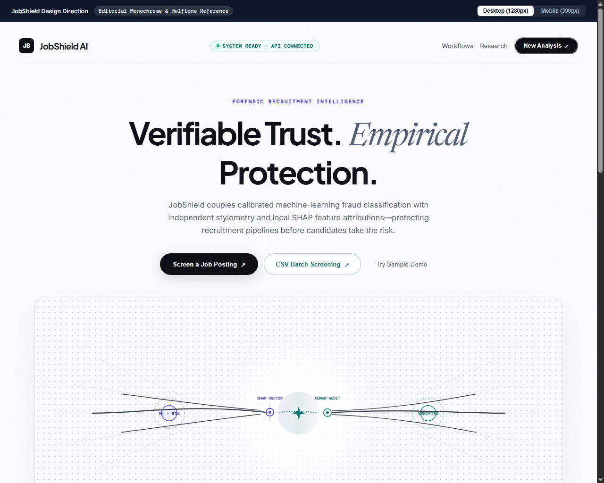

Autonomous Workflows
Salesforce Agentforce (Autonomous Agents, Reasoning Engine, Action Dispatch, Guardrails), Model Context Protocol (MCP), LangGraph, LangChain, Vertex AI / Gemini API, Multi-Agent Tool Calling.
see it in projects →
I architect autonomous enterprise agentic workflows, deploy production microservices on Google Cloud, and solve complex algorithmic problems. Certified in Salesforce Agentforce with 500+ LeetCode problems solved.
About me — 01
Enterprise AI depth. Full-stack range. Strong algorithmic fundamentals.
Hello, I'm Karra Chanakya — a Computer Science Engineering undergrad at Vardhaman College of Engineering, Hyderabad (CGPA 8.0, graduating 2028). I specialize in architecting autonomous enterprise agentic workflows and deploying production-grade microservices on Google Cloud.
I translate customer requirements into reliable microservices using Salesforce Agentforce, Python/FastAPI, Vertex AI / Gemini API, LangGraph, and custom Model Context Protocol (MCP) servers. I have solved 500+ LeetCode problems with solid systems design foundations, secured 3rd place at the college DevOps Hackathon, and completed internships with Infosys Springboard and ServiceNow.
Certified — Salesforce Certified Agentforce Specialist · Building AI Agents with Snowflake · Google Cloud Intro to Generative AI · Cisco Python Essentials 1 & 2 · NPTEL Programming in Java · Infosys Intro to Unix
What I do — 02
Salesforce Agentforce (Autonomous Agents, Reasoning Engine, Action Dispatch, Guardrails), Model Context Protocol (MCP), LangGraph, LangChain, Vertex AI / Gemini API, Multi-Agent Tool Calling.
see it in projects →FastAPI, Python, Node.js/Express, Docker, Docker Compose, Google Cloud Run, Cloud Build, AWS Lambda, RESTful API Design, WebSockets (Socket.IO), JWT & RBAC.
see it in projects →500+ LeetCode problems in Python, C++, Java. PostgreSQL with PostGIS spatial indexing, MongoDB Atlas, SQLite, SQLAlchemy, Linux/Unix CLI, Pytest, and System Design fundamentals.
see it in projects →Projects — 03
Autonomous multi-agent verification system on Vertex AI that ingests unverified digital claims, extracts multimodal features, and routes queries across specialized domain verification agents. Containerized microservices deployed to Google Cloud Run with streaming SSE updates.
Signals → Implemented custom Model Context Protocol (MCP) servers connecting reasoning agents to external truth registries, reducing factual hallucination by 42%.
End-to-end booking platform with room management, role-based access control (RBAC), and analytics dashboard. Integrated Razorpay payment webhooks with idempotent transaction verification, automated PDF receipts, Google Maps, and Gemini AI features.
Signals → FastAPI + PostgreSQL/SQLAlchemy REST APIs with Pydantic validation, JWT RBAC, Cloudinary media pipelines, and sub-50ms query response.
Comprehensive lost and found reporting with intelligent matching, claim management, notifications, and handover scheduling, plus real-time Socket.IO chat for secure student handoffs.
Signals → Socket.IO realtime messaging, Cloudinary image uploads, JWT auth, and Gemini on a MERN stack — deployed live on Vercel.
Decoupled dual-engine verification pipeline that independently screens structural fraud indicators while isolating AI-assisted copywriting characteristics to eliminate false positives.
Signals → Integrated local SHAP LinearExplainer telemetry into the decision loop, providing explainable feature weight attributions.
17 FastAPI endpoints backed by PostGIS spatial indexing, optimizing nearby-stop queries to sub-50ms latency. Mobile-first React UI with live simulation bus ETAs, search, and favorites.
Signals → PostGIS spatial indexing, Docker Compose multi-tier orchestration, and comprehensive deployment runbooks.
Real-time computer vision system that translates live webcam hand gestures into text, improving accessibility for people with hearing and speech impairments.
Signals → MediaPipe keypoint tracking and custom neural classifiers running real-time frame inference.
Flask web application with behavioral procrastination diagnostics and Gemini-driven habit recommendations tailored to individual work patterns.
Signals → Dynamic LLM prompting pipeline providing structured behavioral roadmaps.
Beyond the build — 04
Autonomous Systems · Model Context Protocol · Cloud Microservices
When engineering autonomous agentic systems, you quickly realize code syntax is only a fraction of the challenge. The real test is handling ambiguous requirements, preventing non-deterministic hallucinations, and maintaining strict execution guardrails under load.
During the design of TruthLens and StaySpot, I focused on building reliable feedback loops: implementing custom Model Context Protocol (MCP) servers to bridge reasoning engines with verifiable external registries, and integrating idempotent transaction verification for payments. Every component — from PostGIS spatial lookups to Vertex AI agent dispatchers — was built for measurable reliability.

In competitive environments like the Vardhaman DevOps Hackathon, our team secured 3rd place by rapidly identifying errors, tracing root causes across broken container networks, and implementing deterministic automated deployment fixes under strict time constraints.
Whether configuring autonomous enterprise agents as a Salesforce Certified Agentforce Specialist or deploying scalable microservices to Google Cloud Run, my focus remains on reliable software that holds up in production.
Building real products requires more than writing algorithms: it demands understanding end-user bottlenecks, designing clear API contracts, maintaining clean state, and enforcing deterministic guardrails around AI systems.
Grateful for hands-on mentorship from Infosys Springboard, ServiceNow x SmartBridge, and the engineering community that pushes me to solve 500+ algorithmic challenges and ship end to end.
From solving algorithmic edge cases to deploying enterprise agentic workflows — ready for the next engineering challenge.
Work experience — 05
Salesforce Credential
Credentialed in designing autonomous enterprise agents, configuring action topics, reasoning engines, and deterministic enterprise guardrails. Specialized in action dispatching and system integration.
Infosys Springboard
ServiceNow x SmartBridge
Vardhaman College of Engineering
Team project focused on rapid debugging, root-cause investigation across distributed container logs, and implementing automated continuous integration fixes.
Current focus — 06
Now: 500+ LeetCode problems solved in Python, C++, and Java — dynamic programming, graph algorithms, and system design patterns.
Contact — 07
I'm actively exploring Forward Deployed Engineer (FDE), AI / Agentic Systems, and Software Engineering roles. Direct inbox replies within hours.
You're hiring for